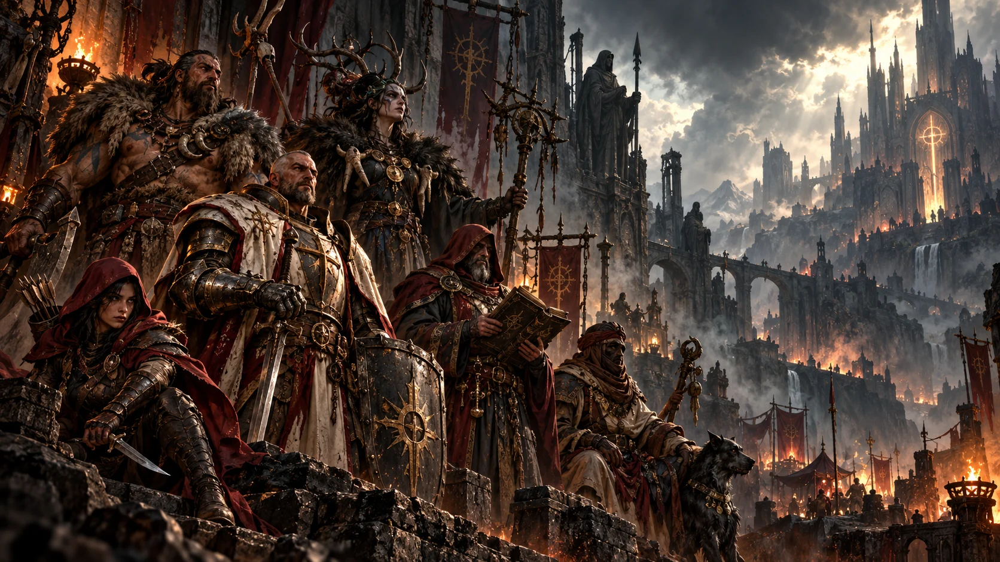
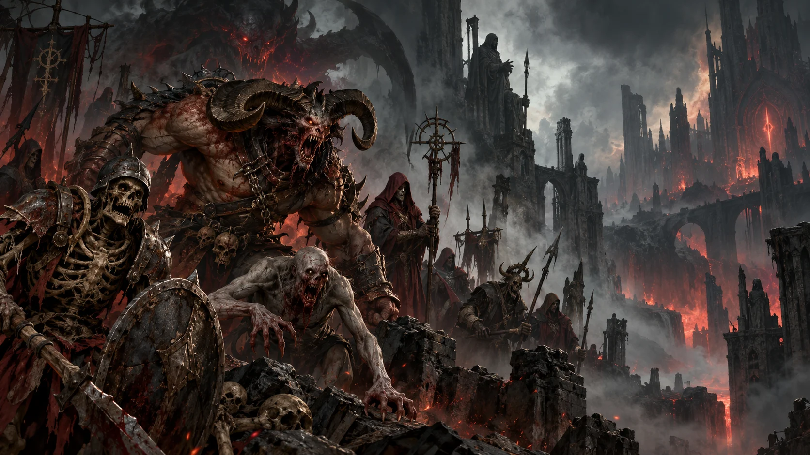

Register 01Personen
Personen erkunden → Register 02Fraktionen
Fraktionen erkunden →
Register 03Vier Register, ein Codex: Schlüsselfiguren, Organisationen, gefährliche Kreaturen und die Relikte, die zwischen ihnen stehen. Wählt ein Register, um tiefer in die aufgezeichnete Geschichte Sanktuarios einzutauchen.

Register 01
Register 03